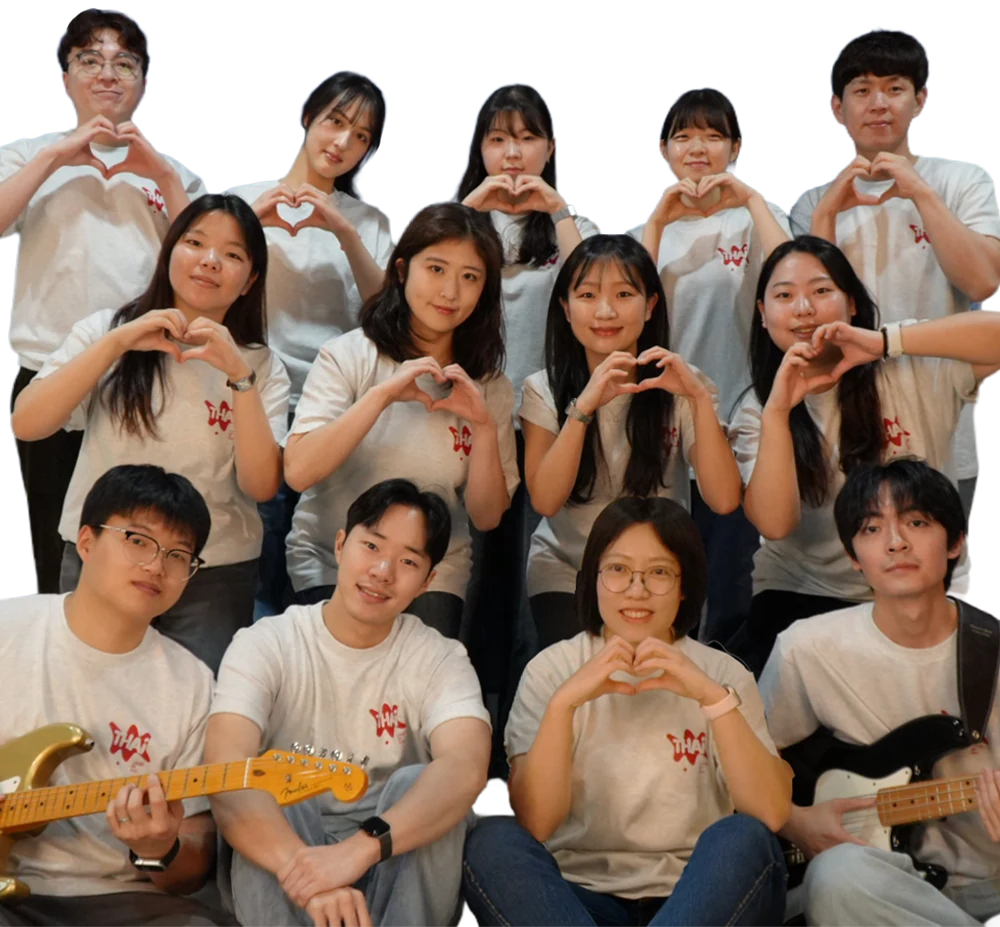

사랑하는 동역자님께
올겨울 저희는 태국 치앙마이로 갑니다. 현지 교회와 함께 예배하고, 찬양과 공연을 통해 만나는 이웃에게 예수님의 사랑을 전하고 싶습니다.
저희가 준비한 무대가 하나님께 드리는 예배가 되기를 소망합니다. 또 치앙마이에서 이미 일하고 계시는 하나님을 알아보고, 현지 교회와 선교사님을 기쁨으로 섬길 수 있도록 함께 기도해 주세요.
기도와 후원으로 이 여정에 함께해 주셔서 감사합니다.
대구동신교회 아포슬 청년부 태국 선교팀 드림
2026 · CHIANG MAI MISSION
2026/12/24 - 2026/12/31
태국 치앙마이 동계 단기선교
대구동신교회 아포슬 청년부
“치앙마이에서 만날 이웃들에게 예수님의 사랑을 전하고, 현지 교회와 함께 하나님을 예배합니다.”

OVERVIEW
현지 교회와 선교사님과 함께 예배하고, 음악과 공연을 통해 이웃을 만나고자 합니다.
MINISTRY
현지 교회와 함께 예배하고 찬양으로 하나님께 마음을 올려 드립니다.
음악과 공연으로 이웃과 만나고 예수님의 사랑을 나눕니다.
현지 교회 및 선교사님과 협의하며 학교와 마을에서 만날 이웃을 섬깁니다.
세부 장소와 시간은 현지 협의 후 정해질 예정입니다.
PRAYER LETTER
사랑하는 동역자님께
올겨울 저희는 태국 치앙마이로 갑니다. 현지 교회와 함께 예배하고, 찬양과 공연을 통해 만나는 이웃에게 예수님의 사랑을 전하고 싶습니다.
저희가 준비한 무대가 하나님께 드리는 예배가 되기를 소망합니다. 또 치앙마이에서 이미 일하고 계시는 하나님을 알아보고, 현지 교회와 선교사님을 기쁨으로 섬길 수 있도록 함께 기도해 주세요.
기도와 후원으로 이 여정에 함께해 주셔서 감사합니다.
대구동신교회 아포슬 청년부 태국 선교팀 드림
팀을 더 알고 싶거나, 후원으로 함께하고 싶다면?
HOW TO JOIN